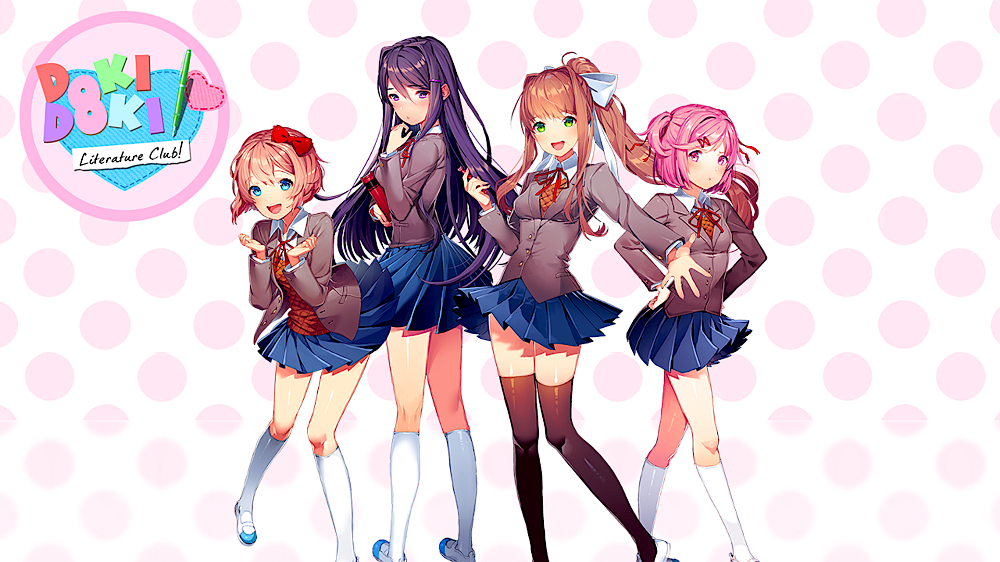
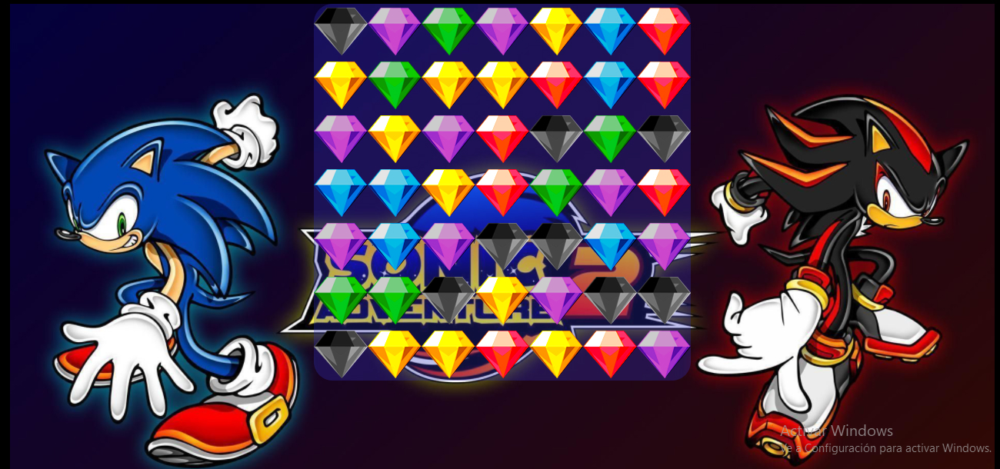
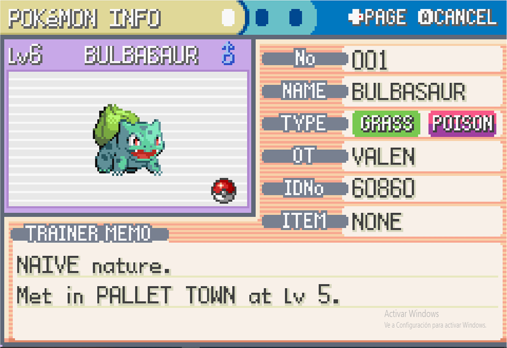

Programador junior fullstack con 1 año de experiencia en proyectos web y desktop. En esta página muestro los trabajos que vengo haciendo desde 2021 a modo de práctica. Llevo 2 años aprendiendo javascript, por lo que ya cuento con un conocimiento avanzado del lenguaje y sus particularidades. Mi stack principal es javascript vainilla/React - Node - SQL - AWS.

Herramientas utilizadas: HTML, CSS, JAVASCRIPT(VAINILLA), NODEJS, FIREBASE BUCKET, JSON
Mostrar DetallesEste es mi proyecto más grande y del cual me siento más orgulloso. Se trata de un videojuego de estilo novela visual anime desarrollado por Team Salvato para PC. Aprovechando la simpleza del juego, decidí intentar programarlo desde cero con HTML, CSS y Javascript vainilla, únicamente utilizando elementos del DOM (nada de canvas). La mayor parte de mi conocimiento de programación web puede reflejarse en este proyecto.

Herramientas utilizadas: HTML, CSS, JAVASCRIPT (VAINILLA)
Mostrar DetallesJuego de combinaciones del estilo Bejeweled o Candy Crush, no hay mucho que decir al respecto. Lo programé porque quise jugar un poco con las listas enlazadas, hechas a partir de clases y con sus propios métodos. Tambien desarrollado en javascript vainilla y usando únicamente elementos del DOM. En este proyecto manejo conceptos de javascript como el anteriormente mencionado. En cuanto a css, aplico animaciones, flexbox y, como detalle, filtros para generar los colores de las esmeraldas del caos (la imagen de las gemas es solo una, la verde, a la que le aplico filtros de css para lograr los otros colores).

Herramientas utilizadas: HTML, CSS, JAVASCRIPT (VAINILLA)
Mostrar DetallesUna vez más, uso como fuente de inspiración un videojuego. Esta es mi primer app con React. Manejo useEffect, useState, componentes estructurados con buenas prácticas y un diseño píxel perfect.